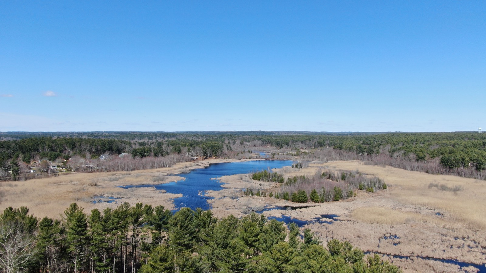
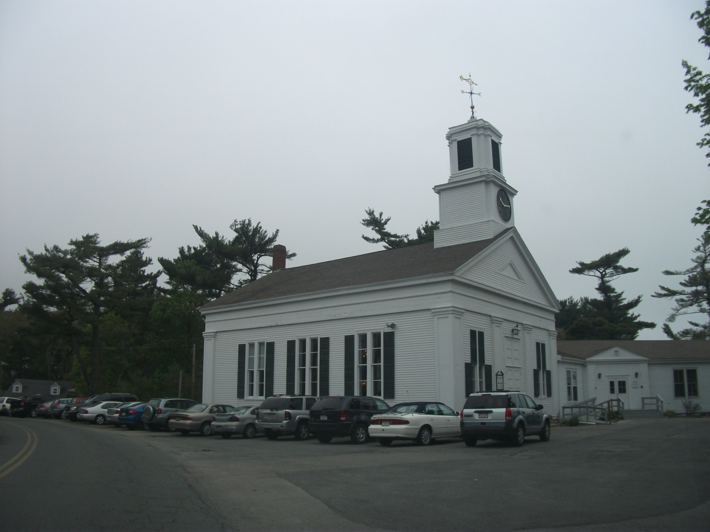

Independent community water quality initiative
We track public EPA and DPW data on Pembroke's five groundwater wells — including the town's own $75 million plan to fix chronic discolored water — and help neighbors understand what's actually in the tap, in plain language.
Pembroke draws all of its public water from five groundwater wells — there's no surface reservoir or river intake. Two of those wells, Hobomock and Bryantville, sit in ground naturally rich in iron and manganese, the same minerals that historically fed the pond-and-bog network that once supported over a dozen cranberry growers around Bryantville village.
Those minerals are also the reason many Pembroke households have dealt with brown, discolored tap water — enough of a problem that the town's Water Superintendent presented a $75 million, multi-year infrastructure plan to the town in December 2024 aimed at replacing aging pipes and cutting down on the sediment stirred up by routine flushing, fire-flow tests, and main breaks.
| Issue | Status | Source |
|---|---|---|
| Discolored (iron/manganese) water | Ongoing, aesthetic per DPW | Town DPW, resident reports |
| PFOA / PFOS (federal 4 ppt limit) | Not reported detected | Public UCMR5 aggregator data |
| Total Coliform Rule violation | Reported by one tracker (2010–2015) | Disputed — see Water data page |
See the full breakdown, sourcing, and where trackers disagree on the Water data page.


Pembroke Water Watch started as a handful of residents comparing notes after yet another round of brown-water complaints — and finding that the town's own explanation ("aesthetic, not a health concern") and the EPA's public compliance data didn't always tell the same story at a glance.
We read the DPW's own reporting, track EPA and Massachusetts DEP data as it's published, and help neighbors figure out whether their household should be doing anything differently while the town works through its infrastructure plan.
Request a free in-home water test and a volunteer will follow up to walk through what your results mean.
Get a free water test